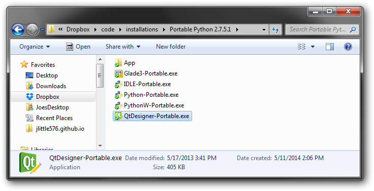
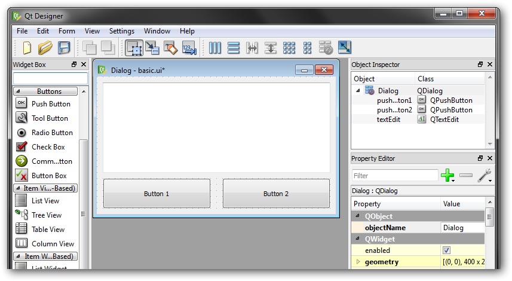

Qt - a C++ cross-platform graphics library
Qt Designer - A program for graphically laying out a GUI, saves to UI file, not language
specific
PyQt - a Python "binding" of Qt which allow use of Qt amd UI files using only
Python
You have to have Python, the pyQt library, and the Qt Designer program. You *don't* need to separately install Qt, which is a ~3gb library.
Currently Qt has rolled QtDesigner into a larger package, QtCreator, which I don't know much about. Portable Python includes a portable version of QtDesigner which is what I've always used. AS with many programs, I install this to my [dropbox]/code/installations/... folder so I always have access to a python installation.
When you get it installed, the executable for QtDesigner will be in the folder you
installed PortablePytohn to. You can create a shortcut to it on your desktop, and/or you
can associate it with UI files by using Open With... on any UI file.

Now the PortablePython installation includes Python 2.7 and PyQt, along with many other libraries, preinstalled, so you can also use it for code execution. If you are not using an IDE, this means calling the executable located at [install dir]/App/python.exe. If you are using an IDE (recommended), this means doing interpreter configuration for the same path.
Or, you can do a standard Python 2.7 install then install the PyQt library from the Unofficial Windows Binaries for Python Extension Packages, pick the one for Python2.7 and either 32-bit or 64-bit according to which version of Python you have installed.
This is a UI file created by UI designer with just 2 buttons and a text window. It was easy to make this from scratch in the UI designer.
You can open it in UI Designer and take a look. You can also play around with adding new
elements, but don't save over it for now.

Paste the following boilerplate code for loading a UI file. This is a complete python
script, e.g. it will run, but it doesn't do anything in the way of making the GUI
elements do stuff
import sys from PyQt4 import QtGui, uic
class MyWindow(QtGui.QMainWindow):
def __init__(self):
super(MyWindow, self).__init__()
uic.loadUi('basic.ui', self) self.show()
app = QtGui.QApplication(sys.argv)
window = MyWindow()
sys.exit(app.exec_())
Like much of my boilerplate code, it was copied directly from a stackoverflow post, thanks kermit666! You can reuse this code at the start of any pyQt project, just change the name of the UI file.
Running this should display basic.ui much like it did in UI Designer